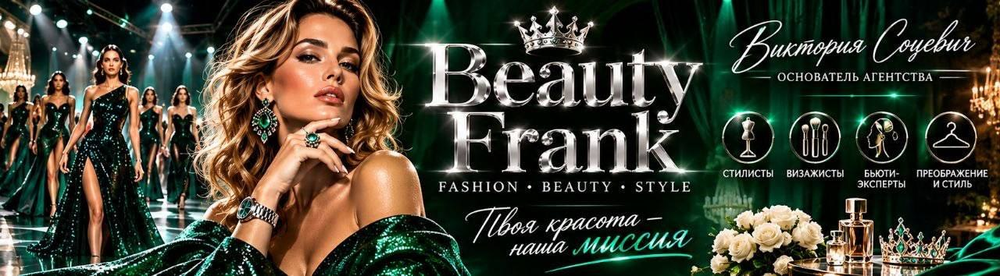
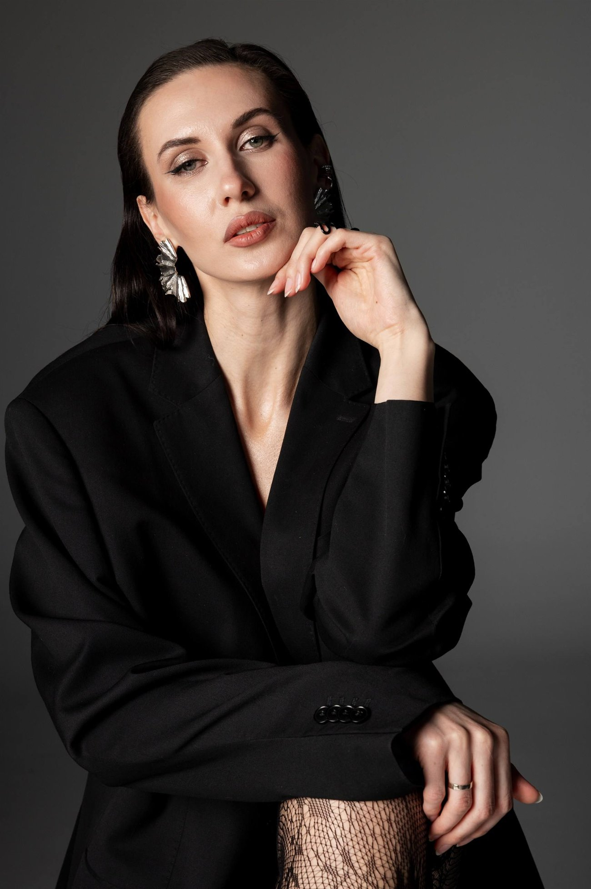

Индивидуальность
Не прячем человека за трендами — помогаем проявить характер.

Beauty Frank
Пространство впечатления
BEAUTY FRANK — пространство красоты, стиля и индивидуальности.
Мы верим, что настоящая красота начинается с уникальности. Поэтому не просто следуем тенденциям, а создаём образы, которые отражают характер, статус и внутреннюю гармонию человека.
Мы объединяем профессионализм, современный подход, чувство стиля и внимание к каждой детали.

Наша миссия
Мы рассматриваем образ как целостную систему: внешность, гардероб, контекст, голос бренда и то, как человек хочет быть воспринят.
Наша работа начинается с диалога и заканчивается не готовым шаблоном, а выразительным и живым решением, которое принадлежит именно вам.
Ценности
Не прячем человека за трендами — помогаем проявить характер.
Выстраиваем гармонию цвета, формы, фактуры и контекста.
Опираемся на реальный опыт индустрии и точную работу с деталями.
Создаём безопасный диалог и сохраняем уважение к личности.
Обновляем инструменты и передаём знания beauty-специалистам.
«Твоя красота — наша миссия»BEAUTY FRANK
Расскажите, какой образ или проект вы хотите создать.